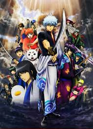

Histoire
À l'ère Édo, le Japon est envahi par des extraterrestres appelés Amanto, des créatures de formes diverses, mais toutes plus ou moins humanoïdes. Ceux-ci parviennent à vaincre les samouraïs après de longs combats. Dès lors, une futurisation radicale tranchante avec le décor classique du Japon se met en place et les Amanto interdisent le port du sabre en public. Malgré tout, il en reste qui préfèrent conserver leur bushido. Dans ce Japon complètement anachronique, subsistent ainsi des personnes qui refusent d'abandonner leur sabre. Parmi eux, Gintoki Sakata, ancien samouraï excentrique qui aide un adolescent nommé Shinpachi Shimura, à sauver sa sœur Tae d'un groupe d'extraterrestres qui veulent la faire rejoindre une maison close. Impressionné par Gintoki, Shinpachi devient son apprenti et travaille avec lui comme homme à tout faire dans le but de payer le loyer de Gintoki.
 Plus tard, ils sauvent une adolescente extraterrestre, nommée Kagura, d'un groupe de Yakuza qui veulent se servir d'elle pour sa force surhumaine. Kagura rejoint alors Gintoki et Shinpachi pour travailler comme homme à tout faire et ils deviennent des "Yorozuya Gin-Chan". Pendant ses missions, ils vont rencontrer les forces de police, le shinsengumi, de nombreuses fois, généralement les deux groupes vont s'allier pour arrêter de dangereux criminels. Ils vont également rencontrer les anciens camarades d'armes de Gintoki durant la guerre d'invasion des Amanto, notamment le terroriste Kotarō Katsura avec qui il maintient une relation amicale malgré l'ambition de ce dernier de détruire le bakufu. À l'inverse, Shinsuke Takasugi agit principalement comme un antagoniste puisqu'il veut détruire le bakufu mais d'une manière plus violente que celle de Katsura.
{kind=link}
Bien que l'histoire de la série soit généralement épisodique, il y a aussi quelques arcs qui se développent sur plusieurs chapitre.
Source Wikipedia